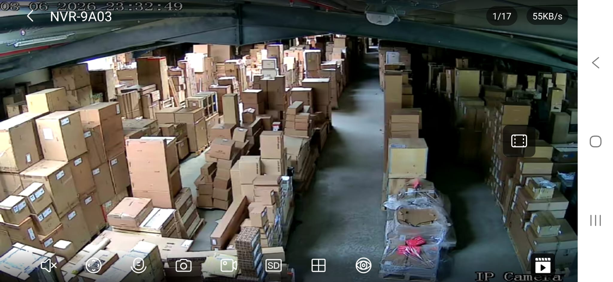
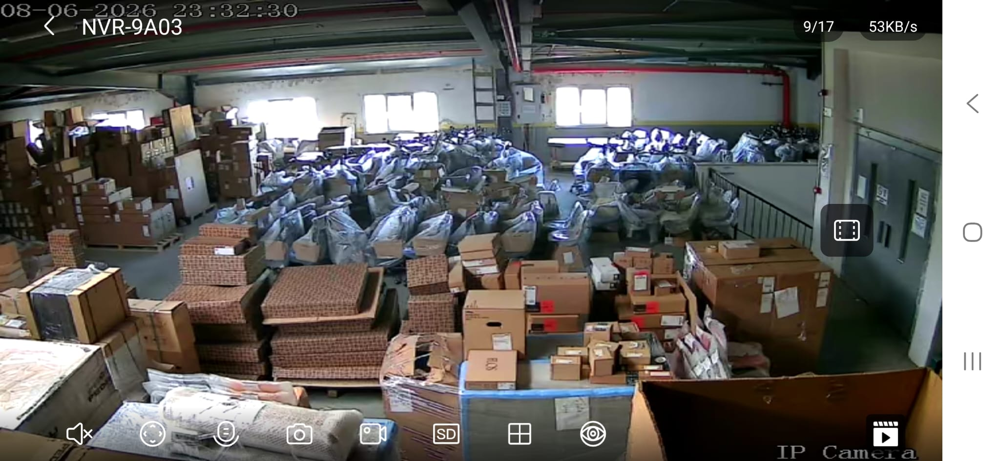
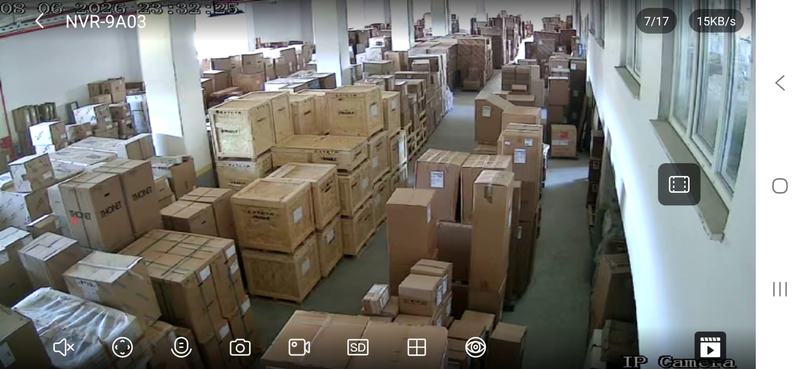
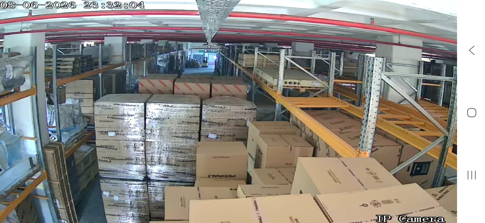

First structured all-hands with the operations and technical team. Key problems, root causes, decisions, and action plan — June 2026.




Subaşı warehouse, June 2026. Aisles impassable in places; ~60% occupied by customer goods awaiting installation.
Fix scheduling first → reduces pressure on staffing and vehicles, making those partially self-correcting.
Sales and Ops in silos; commitments made without checking capacity.
Süreyya receives jobs but cannot filter. No scheduling owner with decision power.
Delivery briefs, checklists, and customer sign-off forms do not exist.
Buying disconnected from selling. Warehouse fills; cash trapped in stock.
Vehicle count hasn't scaled with volume. Maintenance is reactive.
Critical knowledge lives in individuals, not documented systems.
Two new reception staff absorb that load. Süreyya focuses exclusively on scheduling with real authority to reject overloaded days.
Learn real processes, identify gaps, bridge ops and the upcoming platform build.
Pending Yaman Bey sign-off. Unifies customer records, delivery status, inventory, docs, and scheduling.
Operations attendance required. Standing forum to surface issues before they compound.
Sebahattin and Abdullah present an ops update. All meeting attendees expected.
Compensation matrix benchmarked to market. Dedicated session to follow.
Anonymous, third-party. Results presented at the July review.
| Action | Owner | Timeline |
|---|---|---|
| Give Süreyya authority to cap/reject overloaded days | Balamir + Yaman Bey | This month |
| Formalise weekly scheduling cycle (Thu → Fri lock) | Süreyya + Sima | This month |
| Create standard delivery brief template | Sima | 2 weeks |
| Accelerate hiring of 3–4 technicians | Sebahattin + Balamir | Ongoing |
| Explore dedicated vehicle lease for intercity | Sebahattin | 2 weeks |
| Warehouse audit — goods held >12 months | Barış + Sima | 1 month |
| Contact customers with goods >12 months | Balamir + Özlem/Fulya | 1 month |
| Build visual stock catalogue for sales | Sima + depot team | 6 weeks |
| Vehicle maintenance checklist + assigned owner | Sebahattin | 2 weeks |
Loyalty is the team's greatest asset. Members don't complain about hard work — only about the chaos that makes their effort feel wasted.
The warehouse photos say everything. Overstocking, poor coordination, accountability gaps — all visible. To be shown at the July all-hands.
"Everyone is Yaman Bey's friend" dynamic is destroying scheduling authority. Must be addressed at ownership level.
Lighting is the worst offender. Worst stock/sales imbalance. Structural changes already underway (Biricik + Artun hired; Zeynep team realigned).
Speed of change is gated by Yaman Bey. All structural improvements depend on the owner's pace of adoption. Flagged as highest execution risk.
An independent third-party survey has been commissioned. Mozaik customers will be contacted anonymously. Results at the July Q3 review.
| Name | Role | Tenure |
|---|---|---|
| Zafer | Technical Team | 2.5 years |
| Sebahattin | Operations Lead | 30 years (15 as full employee) |
| Fahri | Technical Team | 15–16 years |
| Caner | Technical Team | 12 years |
| Davut | Technical Team | 12 years |
| İsa | Electrical / Lighting | ~23 years |
| Burak | Lighting Team | 8 years |
| Metin | Technical Team | 30 years |
| Barış | Warehouse / Depot | Long tenure |
Facilitated by Balamir (GM) · Sima listening remotely · June 2026